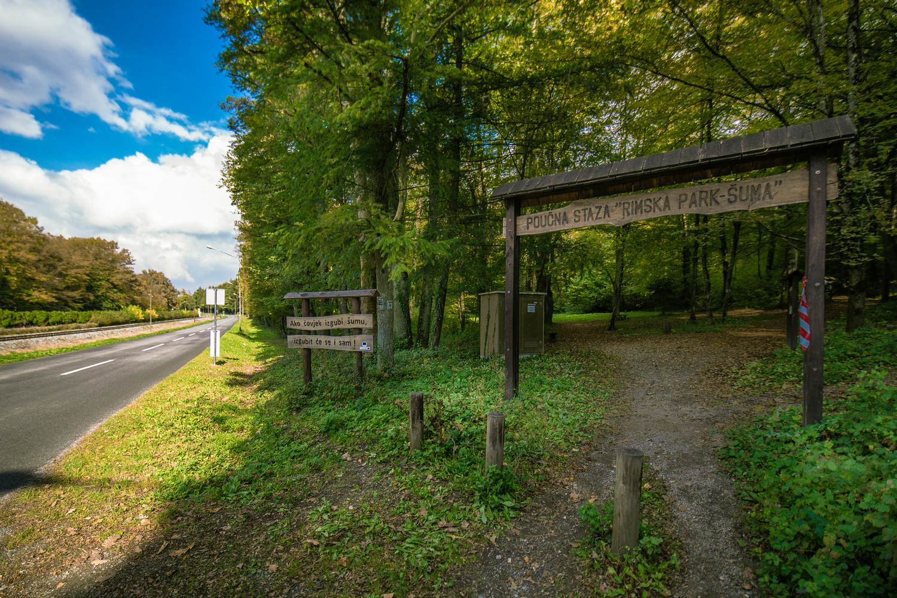
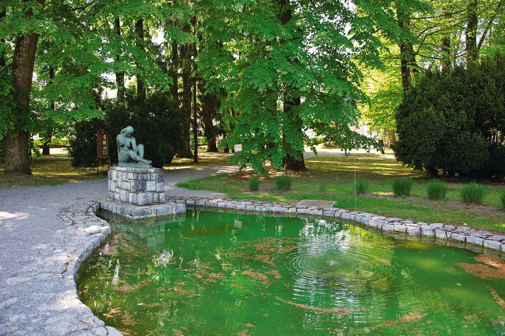
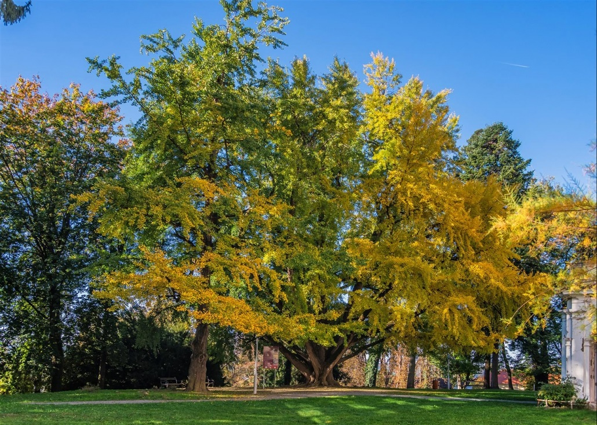
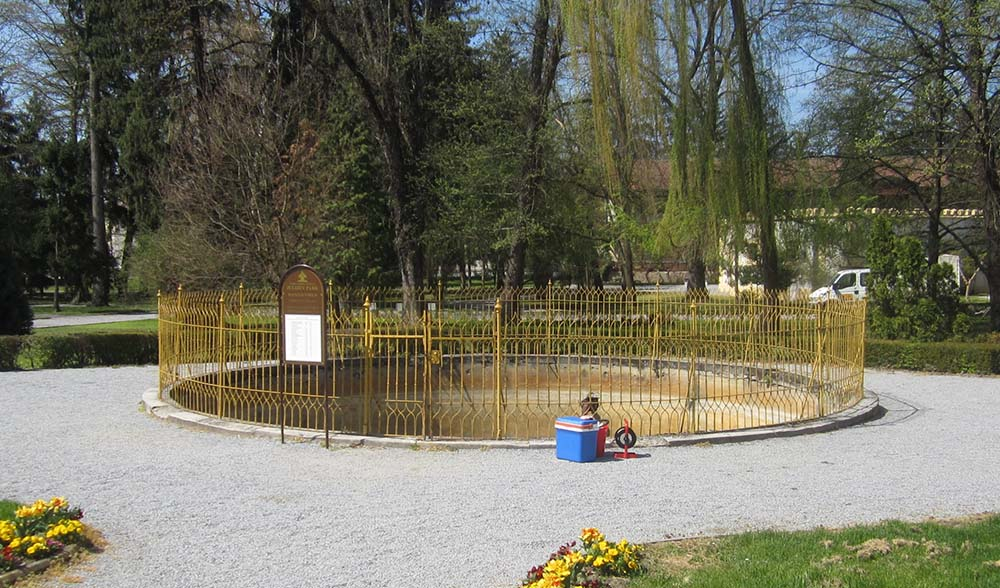

Najljepše lokacije grada Daruvara
1. Park grada

Park grada Daruvara, poznat kao prekrasna zelena oaza, predstavlja važan dio kulturnog i prirodnog nasljeđa ovog grada. Smješten u samom središtu grada, park privlači brojne posjetitelje svojom ljepotom, mirnom atmosferom i raznovrsnim sadržajima. Park se prostire na prostranoj površini i obuhvaća šumovite staze, cvjetne aleje, travnate površine i slikovite jezera. Ovdje možete uživati u opuštenoj šetnji, trčanju, pikniku ili jednostavno sjediti na klupi i uživati u prirodi. Njegova dobro održavana zelena površina pruža osvježavajući bijeg od gradske vreve i idealno mjesto za opuštanje i rekreaciju. Park grada Daruvara također nudi različite sadržaje za sve posjetitelje. Tu se nalaze dječja igrališta s ljuljačkama, toboganima i klackalicama, pružajući mjesto za igru i zabavu najmlađima. Također možete pronaći sportske terene za košarku, nogomet ili odbojku, gdje se možete aktivno baviti sportskim aktivnostima sa svojim prijateljima ili obitelji. Osim toga, park je često domaćin raznih događanja i manifestacija, kao što su koncerti, izložbe, festivali i kulturni programi. Posjetitelji mogu uživati u glazbenim nastupima, umjetničkim izložbama i drugim zabavnim programima koji se organiziraju u prekrasnom prirodnom okruženju parka.
2. Rimska šuma

Rimska šuma u Daruvaru je jedno od najljepših i najdragocjenijih prirodnih blaga tog područja. Ova šuma se prostire na velikom području i pruža izvanredan spoj prirodnih ljepota, raznovrsne flore i faune te brojnih mogućnosti za rekreaciju i odmor u prirodi. Šuma je nazvana po rimskim ostacima koji se nalaze unutar nje, svjedočeći o bogatoj povijesti i prisutnosti Rimljana na ovim prostorima. Rimska šuma je zaštićeno područje koje se sastoji od pretežno hrastove šume s dodatkom drugih vrsta drveća i biljaka. Gusta zelena pokrivenost stvara prirodni okoliš i pruža svježinu i hlad u vrućim ljetnim mjesecima. Šetnja kroz Rimsku šumu pruža priliku za istraživanje i povezivanje s prirodom. Obilježene staze i planinarski putevi vode vas kroz gustu šumu, omogućujući vam da istražujete njen ljepotu i istovremeno uživate u miru i tišini koju priroda pruža. Zrak je ispunjen mirisom biljaka i zvukovima ptica koje pjevaju, pružajući vam osjećaj smirenosti i blagostanja. Rimska šuma je također dom mnogim životinjskim vrstama. Možete naići na različite vrste ptica, sisavaca i gmazova koji žive u ovom prirodnom staništu. Osobito je zanimljivo promatrati ptice kako lete između grana ili susresti srne koje sramežljivo izviruju iz šume.
3. Drvo Ginka bilobe

Ginko biloba, poznat i kao drvo ginka, je vrsta drvenaste biljke koja se može pronaći i u gradu Daruvaru. Drvo ginka je jedinstveno i prepoznatljivo po svojim karakterističnim lepezastim listovima i iznimnom povijesnom značaju. U Daruvaru se može pronaći nekoliko primjeraka drva ginka koji su postali prepoznatljivi simbol grada. Jedno od najpoznatijih mjesta gdje možete vidjeti drvo ginka je u blizini glavnog gradskog trga ili u parkovima koji okružuju gradsku jezgru. Drvo ginka ima bogatu povijest koja seže tisućama godina unatrag. Smatra se da je ginko jedna od najstarijih živućih vrsta na Zemlji i ima važno mjesto u kulturi i tradiciji mnogih zemalja. Ovo drvo se često povezuje s dugovječnošću, snagom i otpornošću. Listovi ginka su iznimno dekorativni i mijenjaju boje tijekom godišnjih doba. U proljeće i ljeto, listovi su svijetlozeleni i puni života, dok u jesen prelaze u prekrasnu zlatnožutu nijansu. Ova transformacija boja čini drvo ginka atraktivnim i omiljenim motivom za fotografije i slikanje. Drvo ginka također ima posebno mjesto u medicini i fitoterapiji. Ekstrakti ginka se koriste kao dodatak prehrani i smatraju se korisnima za poboljšanje kognitivnih funkcija i cirkulacije. Svojstva ginka su proučavana i koriste se u tradicionalnoj medicini već stoljećima.
4. Izvor termalne vode

Izvor termalne vode u Daruvaru je poznat kao "Termalni vrelo". Ovaj izvor je prirodno bogat mineralima i nalazi se u blizini centra grada. Termalna voda koja izvire iz ovog vrela ima povoljan utjecaj na zdravlje i koristi se u terapijske svrhe. Voda iz Termalnog vrela u Daruvaru ima povoljnu temperaturu i bogata je mineralima poput sumpora i magnezija. Ovi minerali imaju blagotvorno djelovanje na kožu, mišiće i zglobove, te se koriste u terapijama za opuštanje, revitalizaciju i poboljšanje općeg zdravlja. Termalna voda iz ovog izvora se također koristi u wellness i spa centrima u Daruvaru, gdje posjetitelji mogu uživati u raznim tretmanima, masažama i kupkama koje pružaju opuštanje i osvježenje. Termalna voda je posebno popularna među posjetiteljima koji traže relaksaciju i wellness doživljaj. Osim terapeutskih svojstava, izvor termalne vode također pruža i prirodno okruženje za rekreaciju i opuštanje. U blizini izvora nalaze se prostori za šetnju, parkovi i prostori za rekreaciju, gdje posjetitelji mogu uživati u prirodi i svježem zraku. Izvor termalne vode u Daruvaru je poznat kao "Termalni vrelo". Ovaj izvor je prirodno bogat mineralima i nalazi se u blizini centra grada. Termalna voda koja izvire iz ovog vrela ima povoljan utjecaj na zdravlje i koristi se u terapijske svrhe. Voda iz Termalnog vrela u Daruvaru ima povoljnu temperaturu i bogata je mineralima poput sumpora i magnezija. Ovi minerali imaju blagotvorno djelovanje na kožu, mišiće i zglobove, te se koriste u terapijama za opuštanje, revitalizaciju i poboljšanje općeg zdravlja. Termalna voda iz ovog izvora se također koristi u wellness i spa centrima u Daruvaru, gdje posjetitelji mogu uživati u raznim tretmanima, masažama i kupkama koje pružaju opuštanje i osvježenje. Termalna voda je posebno popularna među posjetiteljima koji traže relaksaciju i wellness doživljaj. Osim terapeutskih svojstava, izvor termalne vode također pruža i prirodno okruženje za rekreaciju i opuštanje.